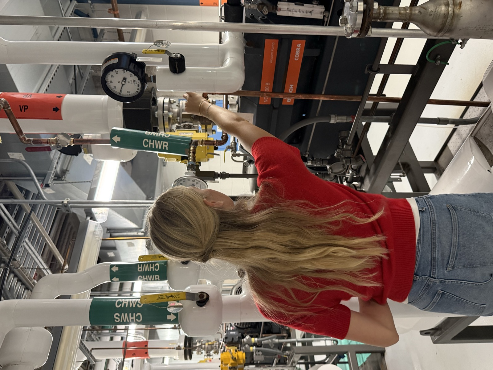
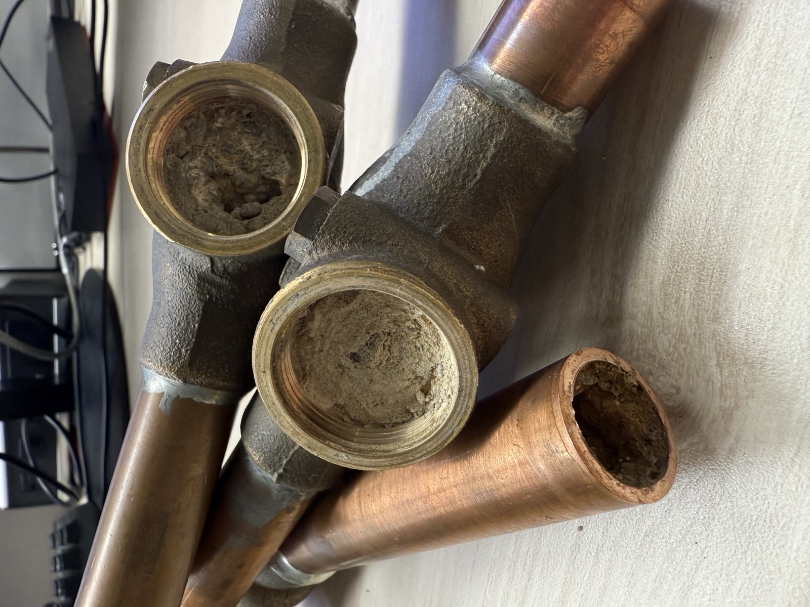
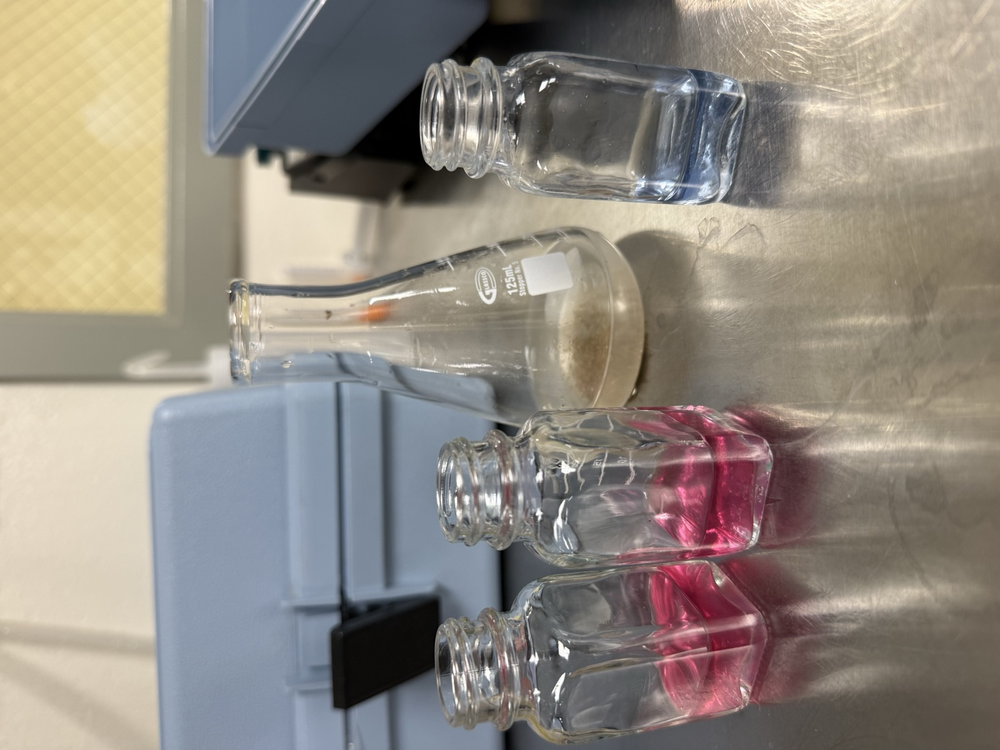
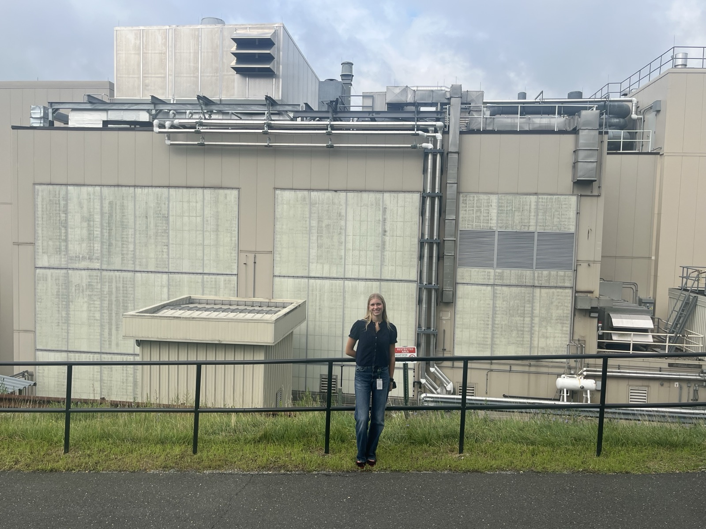
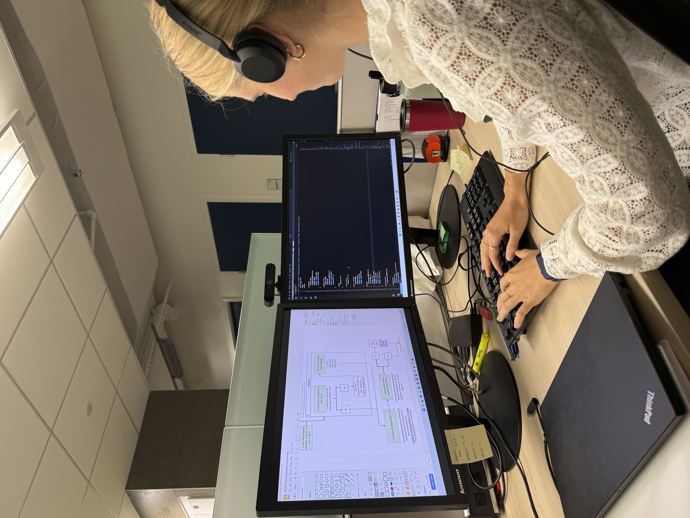
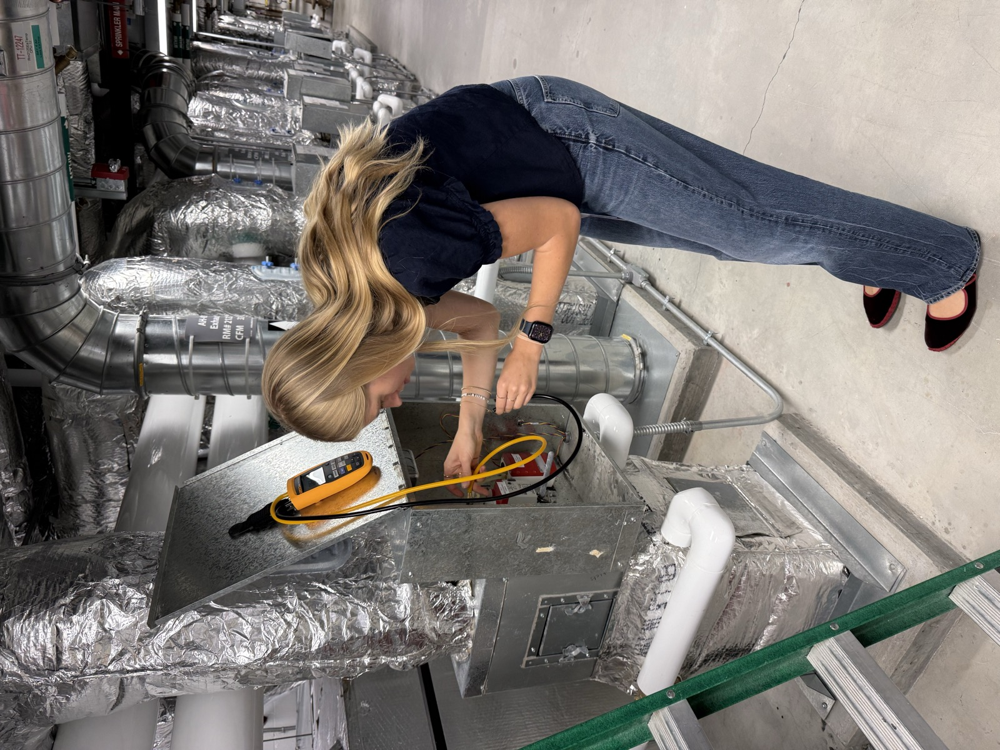
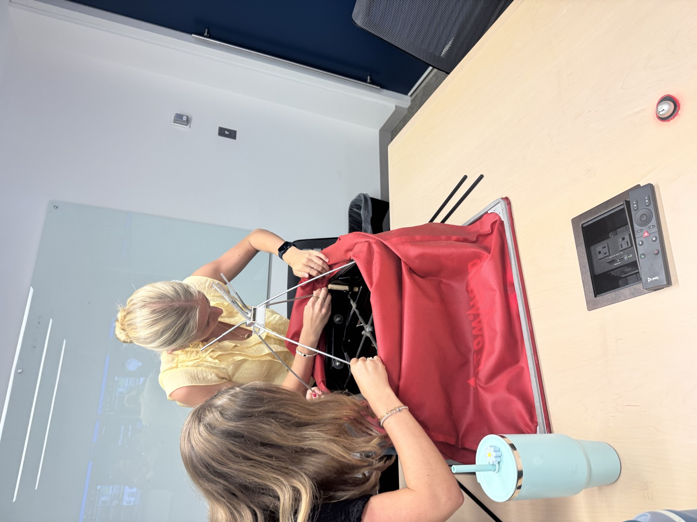

Boehringer Ingelheim · Global Facilities & Engineering Intern
Facilities Engineering — Boehringer Ingelheim
As a Global Facilities & Engineering (GFE) Intern at Boehringer Ingelheim, I supported a range of facilities engineering projects across a pharmaceutical GMP manufacturing campus, working closely with the GFE team on process room systems, equipment reliability, and site infrastructure.
Vacuum Pump Sediment Buildup & Syltherm Heat Exchanger
Investigated sediment buildup in vacuum pump piping through field assessments and discussions with Nalco, and participated in site walkthroughs to identify root causes and evaluate mitigation strategies. Supported planning and design efforts for a water softener installation and heat exchanger system to improve reliability and freeze protection.



KalWall Blast Panel Replacement
Supported evaluation and replacement planning for aging KalWall blast panels, leading site walkthroughs with vendors to assess existing conditions and project requirements, and assisting with drawings, material specifications, and project cost estimates.

the cleanroom Punch List
Supported completion of critical punch-list items before GMP cleaning and turnover, coordinating with facilities and laboratory teams and assisting with resolving issues involving electrical systems, ceilings, doors, glazing, and wall finishes.

Equipment Disposal App & Workflow
Documented the equipment disposal process across multiple approval groups, created workflow diagrams and process maps to standardize the process and improve visibility for all parties involved, and developed an HTML-based prototype to support a future equipment disposal app.

AED Locations & Website
Verified AED locations through campus-wide facility walkthroughs and created floor maps documenting AED locations to improve emergency preparedness. Designed an HTML-based draft that helped create the published SharePoint site.

Process Room Air Exchange & Pressure Calculations
Performed air exchange and pressure calculations for pharmaceutical process rooms and support spaces, analyzing engineering drawings, Honeywell data, and Excel datasets to evaluate HVAC performance, and identifying performance gaps and recommendations for monitoring and balancing improvements.

Through this internship I became proficient in AutoCAD, Microsoft Office, and HTML, and learned the fundamentals of facilities engineering within a regulated pharmaceutical manufacturing environment.